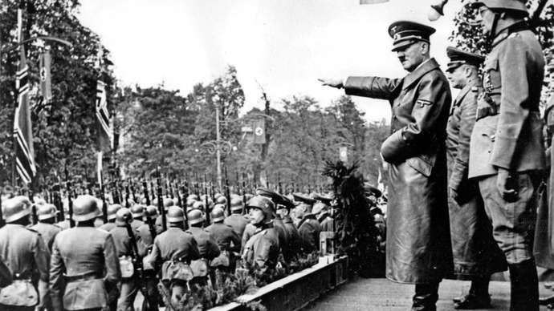
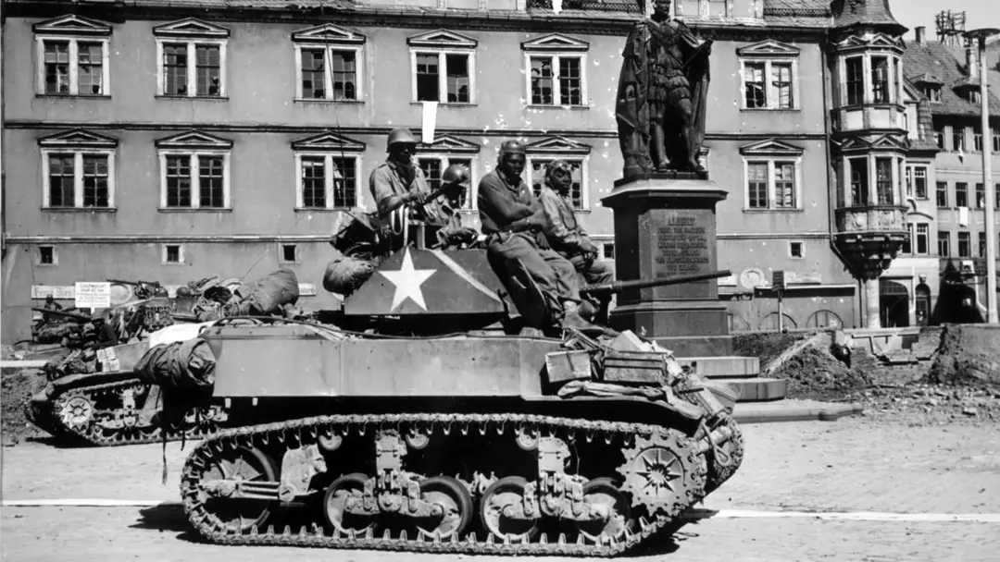

The devastation of the Great War (as World War I was known at the time) had greatly destabilized Europe, and in many respects World War II grew out of issues left unresolved by that earlier conflict. In particular, political and economic instability in Germany, and lingering resentment over the harsh terms imposed by the Versailles Treaty, fueled the rise to power of Adolf Hitler and National Socialist German Workers’ Party, abbreviated as NSDAP in German and the Nazi Party in English..
After becoming Chancellor of Germany in 1933, Hitler swiftly consolidated power, anointing himself Führer (supreme leader) in 1934. Obsessed with the idea of the superiority of the “pure” German race, which he called “Aryan,” Hitler believed that war was the only way to gain the necessary “Lebensraum,” or living space, for the German race to expand. In the mid-1930s, he secretly began the rearmament of Germany, a violation of the Versailles Treaty. After signing alliances with Italy and Japan against the Soviet Union, Hitler sent troops to occupy Austria in 1938 and the following year annexed Czechoslovakia. Hitler’s open aggression went unchecked, as the United States and Soviet Union were concentrated on internal politics at the time, and neither France nor Britain (the two other nations most devastated by the Great War) were eager for confrontation.
In late August 1939, Hitler and Soviet leader Joseph Stalin signed the German-Soviet Nonaggression Pact, which incited a frenzy of worry in London and Paris. Hitler had long planned an invasion of Poland, a nation to which Great Britain and France had guaranteed military support if it were attacked by Germany. The pact with Stalin meant that Hitler would not face a war on two fronts once he invaded Poland, and would have Soviet assistance in conquering and dividing the nation itself. On September 1, 1939, Hitler invaded Poland from the west; two days later, France and Britain declared war on Germany, beginning World War II.
On September 17, Soviet troops invaded Poland from the east. Under attack from both sides, Poland fell quickly, and by early 1940 Germany and the Soviet Union had divided control over the nation, according to a secret protocol appended to the Nonaggression Pact. Stalin’s forces then moved to occupy the Baltic States (Estonia, Latvia and Lithuania) and defeated a resistant Finland in the Russo-Finnish War. During the six months following the invasion of Poland, the lack of action on the part of Germany and the Allies in the west led to talk in the news media of a “phony war.” At sea, however, the British and German navies faced off in heated battle, and lethal German U-boat submarines struck at merchant shipping bound for Britain, sinking more than 100 vessels in the first four months of World War II.
On April 9, 1940, Germany simultaneously invaded Norway and occupied Denmark, and the war began in earnest. On May 10, German forces swept through Belgium and the Netherlands in what became known as “blitzkrieg,” or lightning war. Three days later, Hitler’s troops crossed the Meuse River and struck French forces at Sedan, located at the northern end of the Maginot Line, an elaborate chain of fortifications constructed after World War I and considered an impenetrable defensive barrier. In fact, the Germans broke through the line with their tanks and planes and continued to the rear, rendering it useless. The British Expeditionary Force (BEF) was evacuated by sea from Dunkirk in late May, while in the south French forces mounted a doomed resistance. With France on the verge of collapse, Italy’s fascist dictator Benito Mussolini formed an alliance with Hitler, the Pact of Steel, and Italy declared war against France and Britain on June 10.
On June 14, German forces entered Paris; a new government formed by Marshal Philippe Petain (France’s hero of World War I) requested an armistice two nights later. France was subsequently divided into two zones, one under German military occupation and the other under Petain’s government, installed at Vichy France. Hitler now turned his attention to Britain, which had the defensive advantage of being separated from the Continent by the English Channel.
To pave the way for an amphibious invasion (dubbed Operation Sea Lion), German planes bombed Britain extensively beginning in September 1940 until May 1941, known as the Blitz, including night raids on London and other industrial centers that caused heavy civilian casualties and damage. The Royal Air Force (RAF) eventually defeated the Luftwaffe (German Air Force) in the Battle of Britain, and Hitler postponed his plans to invade. With Britain’s defensive resources pushed to the limit, Prime Minister Winston Churchill began receiving crucial aid from the U.S. under the Lend-Lease Act, passed by Congress in early 1941.
By early 1941, Hungary, Romania and Bulgaria had joined the Axis, and German troops overran Yugoslavia and Greece that April. Hitler’s conquest of the Balkans was a precursor for his real objective: an invasion of the Soviet Union, whose vast territory would give the German master race the “Lebensraum” it needed. The other half of Hitler’s strategy was the extermination of the Jews from throughout German-occupied Europe. Plans for the “Final Solution” were introduced around the time of the Soviet offensive, and over the next three years more than 4 million Jews would perish in the death camps established in occupied Poland.
On June 22, 1941, Hitler ordered the invasion of the Soviet Union, codenamed Operation Barbarossa. Though Soviet tanks and aircraft greatly outnumbered the Germans’, Russian aviation technology was largely obsolete, and the impact of the surprise invasion helped Germans get within 200 miles of Moscow by mid-July. Arguments between Hitler and his commanders delayed the next German advance until October, when it was stalled by a Soviet counteroffensive and the onset of harsh winter weather.
With Britain facing Germany in Europe, the United States was the only nation capable of combating Japanese aggression, which by late 1941 included an expansion of its ongoing war with China and the seizure of European colonial holdings in the Far East. On December 7, 1941, 360 Japanese aircraft attacked the major U.S. naval base at Pearl Harbor in Hawaii, taking the Americans completely by surprise and claiming the lives of more than 2,300 troops. The attack on Pearl Harbor served to unify American public opinion in favor of entering World War II, and on December 8 Congress declared war on Japan with only one dissenting vote. Germany and the other Axis Powers promptly declared war on the United States.
After a long string of Japanese victories, the U.S. Pacific Fleet won the Battle of Midway in June 1942, which proved to be a turning point in the war. On Guadalcanal, one of the southern Solomon Islands, the Allies also had success against Japanese forces in a series of battles from August 1942 to February 1943, helping turn the tide further in the Pacific. In mid-1943, Allied naval forces began an aggressive counterattack against Japan, involving a series of amphibious assaults on key Japanese-held islands in the Pacific. This “island-hopping” strategy proved successful, and Allied forces moved closer to their ultimate goal of invading the mainland Japan.
In North Africa, British and American forces had defeated the Italians and Germans by 1943. An Allied invasion of Sicily and Italy followed, and Mussolini’s government fell in July 1943, though Allied fighting against the Germans in Italy would continue until 1945.
On the Eastern Front, a Soviet counteroffensive launched in November 1942 ended the bloody Battle of Stalingrad, which had seen some of the fiercest combat of World War II. The approach of winter, along with dwindling food and medical supplies, spelled the end for German troops there, and the last of them surrendered on January 31, 1943.
On June 6, 1944–celebrated as “D-Day”–the Allies began a massive invasion of Europe, landing 156,000 British, Canadian and American soldiers on the beaches of Normandy, France. In response, Hitler poured all the remaining strength of his army into Western Europe, ensuring Germany’s defeat in the east. Soviet troops soon advanced into Poland, Czechoslovakia, Hungary and Romania, while Hitler gathered his forces to drive the Americans and British back from Germany in the Battle of the Bulge (December 1944-January 1945), the last major German offensive of the war.
An intensive aerial bombardment in February 1945 preceded the Allied land invasion of Germany, and by the time Germany formally surrendered on May 8, Soviet forces had occupied much of the country. Hitler was already dead, having died by suicide on April 30 in his Berlin bunker.
At the Potsdam Conference of July-August 1945, U.S. President Harry S. Truman (who had taken office after Roosevelt’s death in April), Churchill and Stalin discussed the ongoing war with Japan as well as the peace settlement with Germany. Post-war Germany would be divided into four occupation zones, to be controlled by the Soviet Union, Britain, the United States and France. On the divisive matter of Eastern Europe’s future, Churchill and Truman acquiesced to Stalin, as they needed Soviet cooperation in the war against Japan.
Heavy casualties sustained in the campaigns at Iwo Jima (February 1945) and Okinawa (April-June 1945), and fears of the even costlier land invasion of Japan led Truman to authorize the use of a new and devastating weapon. Developed during a top secret operation code-named The Manhattan Project, the atomic bomb was unleashed on the Japanese cities of Hiroshima and Nagasaki in early August. On August 15, the Japanese government issued a statement declaring they would accept the terms of the Potsdam Declaration, and on September 2, U.S. General Douglas MacArthur accepted Japan’s formal surrender aboard the USS Missouri in Tokyo Bay.

A TANK AND CREW FROM THE 761ST TANK BATTALION IN FRONT OF THE PRINCE ALBERT MEMORIAL IN COBURG, GERMANY, 1945.World War II exposed a glaring paradox within the United States Armed Forces. Although more than 1 million African Americans served in the war to defeat Nazism and fascism, they did so in segregated units. The same discriminatory Jim Crow policies that were rampant in American society were reinforced by the U.S. military. Black servicemen rarely saw combat and were largely relegated to labor and supply units that were commanded by white officers.
There were several African American units that proved essential in helping to win World War II, with the Tuskegee Airmen being among the most celebrated. But the Red Ball Express, the truck convoy of mostly Black drivers were responsible for delivering essential goods to General George S. Patton’s troops on the front lines in France. The all-Black 761st Tank Battalion fought in the Battle of the Bulge, and the 92 Infantry Division, fought in fierce ground battles in Italy. Yet, despite their role in defeating fascism, the fight for equality continued for African American soldiers after the World War II ended. They remained in segregated units and lower-ranking positions, well into the Korean War, a few years after President Truman signed an executive order to desegregate the U.S. military in 1948.
World War II proved to be the deadliest international conflict in history, taking the lives of 60 to 80 million people, including 6 million Jews who died at the hands of the Nazis during the Holocaust. Civilians made up an estimated 50-55 million deaths from the war, while military comprised 21 to 25 million of those lost during the war. Millions more were injured, and still more lost their homes and property.
The legacy of the war would include the spread of communism from the Soviet Union into eastern Europe as well as its eventual triumph in China, and the global shift in power from Europe to two rival superpowers–the United States and the Soviet Union–that would soon face off against each other in the Cold War.